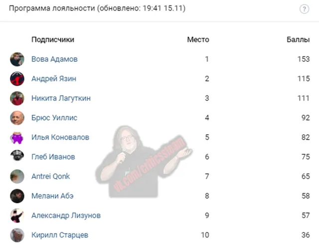

Итоги лояльности
ВКонтакте
Всем огромное спасибо за активность!
15 ноября 2020 · №733 в выгрузке стены · оригинал во ВКонтакте ↗


#ИтогиЛояльности@criticssteam #20
🏆Сегодня мы снова благодарим [id347679904|Андрея Язина] за финансовую поддержку сообщества! огромное спасибо, что спонсируешь нас уже одиннадцатую неделю подряд!
==============
🎺А итоги Программы Лояльности у нас следующие:
🥇 [id119602395|Вова Адамов]
🥈 [id347679904|Андрей Язин]
🥉 [id284440935|Никита Лагуткин]
==========
» Всем огромное спасибо за активность!
Ниже, как всегда, ТОП-10 за неделю.
#BehemothLivesMatter
🏆Сегодня мы снова благодарим [id347679904|Андрея Язина] за финансовую поддержку сообщества! огромное спасибо, что спонсируешь нас уже одиннадцатую неделю подряд!
==============
🎺А итоги Программы Лояльности у нас следующие:
🥇 [id119602395|Вова Адамов]
🥈 [id347679904|Андрей Язин]
🥉 [id284440935|Никита Лагуткин]
==========
» Всем огромное спасибо за активность!
Ниже, как всегда, ТОП-10 за неделю.
#BehemothLivesMatter